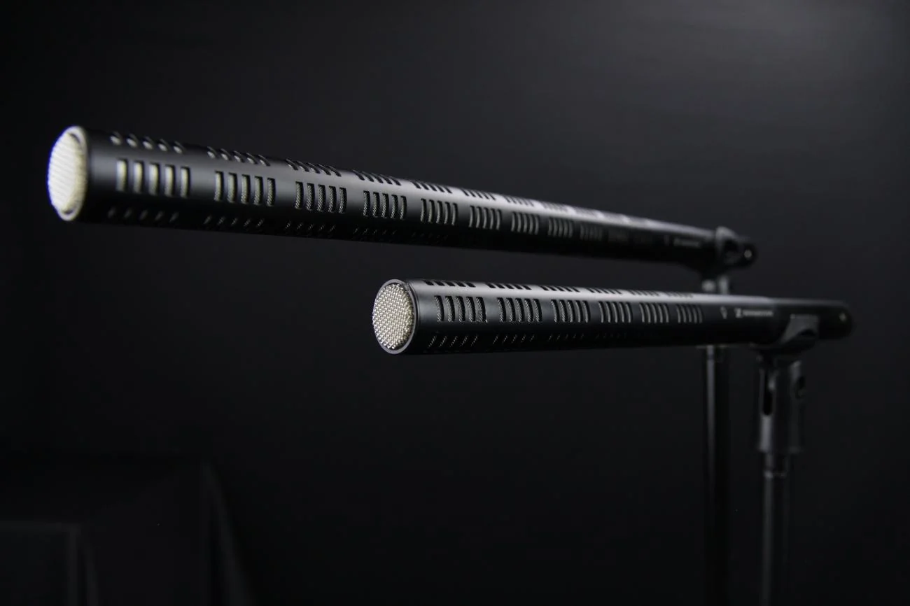

Production sound mixing

On-set sync sound and multitrack recording for features, documentaries, and series. The goal is clean, editable dialogue and production effects captured with correct perspective and minimal ADR.
Includes: boom and wireless lavs, multitrack mix to recorder, timecode sync, daily sound reports, and handoff to editorial.
When it matters: projects shooting sync, interiors with controlled noise, and locations where performance cannot be recreated in ADR.
Sync sound
Capturing vocal performance on set so actors are not asked to re-voice emotion, timing, and texture in a studio later.
Approach: scout acoustics, coordinate with camera and AD, protect dialogue in difficult environments, and document issues for post.
Location sound recording
Full location sound department support—dialogue, plant mics where appropriate, and communication with production on noise control.
Ambience recording
MS, ORTF, and spaced-pair recordings tailored to picture geography and editorial needs—room tones, exteriors, and signature environments.
FX recording
Production effects and specific sound events recorded on location or in controlled environments for editorial and design.
Foley recording
Location and studio foley with attention to performance, perspective, and sync—supervision available for features.
Dialogue editing
Assembly, cleaning, and preparation of dialogue tracks—RX workflows where needed, consistent nomenclature, and edit-friendly sessions.
Sound design & editorial
Dialogue, ambience, effects, and foley editorial through pre-mix. Production track re-conform when picture changes.
Includes: tracklay prep, perspective-appropriate effects, and support through preview mixes.
Post-production support
Consultation on workflow, deliverables, and technical requirements for Indian and international finishing paths—including DCP-related audio checks.
Discuss scope for your project
Share format, schedule, and locations—a brief call is usually enough to align kit and crew.
Contact